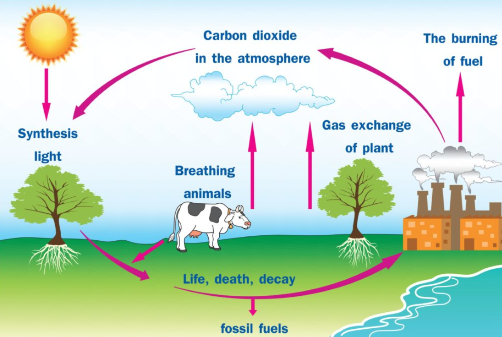
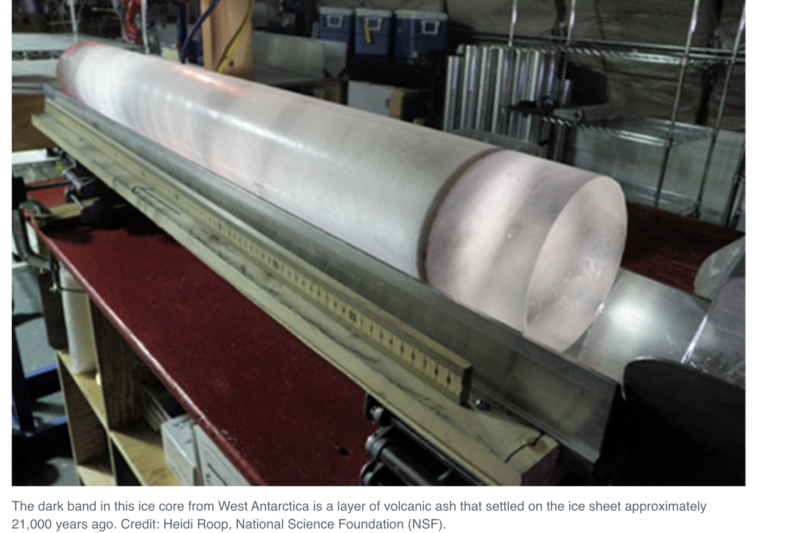

2.8 Matter Cycles: Carbon Among the Spheres
Chapter 2.7 followed the energy through an ecosystem and watched it run out. This chapter follows the atoms through the same ecosystem and watches them come back. Same organisms, same two processes, completely different behaviour — and by the end you will be able to explain how a carbon atom gets from a giraffe into a tree, and what happens when we take a great many of them out of a rock.
Why the biosphere needs a supply of energy but not of atoms
Anchor Guide 3 asks two questions side by side, and setting them next to each other is the whole idea of this unit.
Why does life in the biosphere need a continuous inflow of energy? Because every transfer degrades some energy to heat, and heat radiates away into space. Nothing collects it back. The supply must be topped up permanently or everything stops.
Why does it not need a continuous inflow of carbon atoms? Because atoms are conserved and reusable. A carbon atom that has just been respired out of a giraffe is chemically identical to one that has never been in an organism. Nothing is used up. The same atoms go round and round, and Earth has been running on essentially the same stock for four billion years.
So the diagram of an ecosystem has two kinds of arrow that behave differently — the one-way orange ones and the closed blue loop from the figure at the start of 2.7. This chapter is about the blue loop, drawn properly.
The carbon in your body was, at various times, in the atmosphere, in a plant, in an animal, and quite possibly in a rock. Some of it was in a dinosaur. That is not a poetic flourish — it is a straightforward consequence of conservation of matter plus four billion years of mixing.
The processes that move carbon
There are only a handful of them, and you already know most.
| Process | Moves carbon | Speed |
|---|---|---|
| Photosynthesis | Atmosphere → living things the only arrow that brings carbon into the biosphere | Fast |
| Cellular respiration | Living things → atmosphere plants, animals and decomposers all do it | Fast |
| Feeding | Organism → organism | Fast |
| Biosynthesis | Small organic molecules → the body of an organism | Fast |
| Death, waste and decomposition | Living things → dead organic matter → decomposers → atmosphere | Fast |
| Dissolving and outgassing | Atmosphere ⇆ ocean | Fast |
| Burial | Dead organic matter → fossil fuels | Very slow — millions of years |
| Sedimentation | Ocean → carbonate rock | Very slow |
| Volcanism and weathering | Rock → atmosphere | Very slow |
| Combustion | Fossil fuels → atmosphere | Fast — and this is the problem |
Notice that the list splits cleanly in two. There is a fast biological loop that turns over in years, and a slow geological loop that turns over in millions. They meet at exactly one place in nature — volcanism — and at exactly one place because of us.
Compare that with the version below, which is the diagram used in your own class deck. It labels photosynthesis "Synthesis light" and the CO₂ leaving the cow "Breathing animals".
The second label is the misconception this whole unit exists to correct, printed on a teaching diagram. Breathing is ventilation — moving air in and out of lungs. The CO₂ that leaves a cow was produced by cellular respiration in its cells; breathing is just the transport that carries it out. And it cannot be "breathing" that puts carbon into the air generally, because a tree does the same thing and has no lungs at all. The diagram also gives the tree a separate arrow labelled "gas exchange of plant", as though plants were doing something different. They are not: both animals and plants are respiring.
Use the corrected diagram above. Use this one as a test of whether you can spot the error.

Follow one carbon atom
Questions 18a and 18b of Anchor Guide 3 ask how a carbon atom in a giraffe could end up in a tree, and how a carbon atom in dead organic matter could end up in a giraffe. Both have blank boxes under them.
Here is the diagram made live. Pick a process at each step — not a destination — and see where the atom goes. If a process is not offered, it is because it cannot happen from where the atom currently is.
Follow one carbon atom
InteractiveDo all four challenges and one thing becomes unmissable: every route goes through the atmosphere.
Carbon does not pass directly from an animal to a plant. It has to be respired out as CO₂ first, and only then can photosynthesis pick it up again. Nothing but photosynthesis brings carbon into a living thing.
Which means the atmosphere is the junction that everything passes through — and it is a small reservoir. That combination, small and central, is exactly why changing it has such large effects.
Four spheres, sources and sinks
The standard for this chapter asks specifically about carbon cycling among four systems, so they deserve naming:
- Atmosphere — the air. Carbon here is mostly CO₂, with some methane.
- Hydrosphere — the oceans, lakes and rivers. Dissolved CO₂ and carbonate ions.
- Biosphere — all living things, plus dead organic matter and soil carbon.
- Geosphere — rock and sediment. Limestone and other carbonates, plus fossil fuels.
They are wildly unequal. Almost all of Earth's carbon is in the geosphere, locked in carbonate rock. The hydrosphere holds roughly fifty times as much as the atmosphere. The biosphere — every living thing on the planet — holds less than the air does.
Size is not what matters. Rate is what matters.
Photosynthesis and respiration move enormous quantities of carbon every year and very nearly cancel each other out. Burial and volcanism move tiny quantities over millions of years. So a reservoir can be huge and irrelevant on human timescales, or small and decisive.
A carbon source releases more than it absorbs; a carbon sink absorbs more than it releases. The same forest is a sink while it is growing and a source while it is burning. Nothing about the forest changed except which arrow is bigger.
Now put the two facts together, because it is the argument the rest of this chapter rests on. Burning fossil fuels takes carbon out of the slowest reservoir — where it has been sitting, untouched, for hundreds of millions of years — and puts it into the fastest and smallest one. The slow arrows that would put it back take millions of years. The fast arrows cannot keep up.
The evidence, and how we have it
The planet breathes once a year
Since 1958, atmospheric CO₂ has been measured continuously at Mauna Loa in Hawaii. The record — the Keeling curve — does two things at once. It rises steadily, and it wobbles up and down every single year.
The wobble is the biosphere. Most of Earth's land is in the Northern Hemisphere, so most of Earth's plants are. In the northern spring and summer they photosynthesise faster than everything respires, and global CO₂ falls. In the northern autumn and winter the leaves drop, photosynthesis slows, decomposers keep working, and CO₂ rises again.
The Southern Hemisphere shows the same cycle much more weakly, and in the opposite phase, because it has far less land. That asymmetry is itself the proof that the wobble is caused by land plants rather than by anything else.
Stop and appreciate what that graph is. It is chapters 2.3 and 2.5 of this reader, measured from the top of a Hawaiian volcano, at planetary scale, once a year, for nearly seventy years. Photosynthesis and respiration are not abstractions — they are large enough to move the composition of the entire atmosphere up and down on an annual rhythm.
How we know what the air was like before anyone measured it

Extract the gas from those bubbles and measure it, and you get a direct record of atmospheric composition going back hundreds of thousands of years.
Read the shape carefully, because the shape is the argument. CO₂ has moved up and down naturally for as far back as the record goes, and it never once crossed 300 ppm until the twentieth century. Pre-industrial level was about 280 ppm. Today it is over 420 — more than 120 ppm above a ceiling that held for 800,000 years, reached in about two centuries.
Why more CO₂ makes the planet warmer
Sunlight arrives mostly as visible light, passes through the atmosphere, and warms the surface. The warm surface radiates energy back out — but as infrared, at a longer wavelength. Carbon dioxide, methane and water vapour absorb infrared strongly and re-radiate it in all directions, including back down.
The natural effect is not a problem. It is the reason Earth averages about 15 °C rather than about −18 °C, and without it the oceans would be frozen. The issue is the difference between the two panels — the extra blanket added in two hundred years, which sends a larger share of the heat back down instead of letting it go.
Back to the bottle
The unit opened with a sealed bottle garden that has kept a plant alive since 1960 with one drink of water. You now have everything you need to model it properly, so do that before reading on.
Draw the bottle. Show, with different arrow styles for matter and energy:
- What crosses the glass, in each direction, and what does not.
- Every process happening inside — name them properly.
- Where the carbon atoms are and how they move between those places.
- Where the energy enters, what it becomes, and where it leaves.
- One thing that would kill the bottle, and why.
Here is the model in words. Light passes through the glass. The plant photosynthesises, fixing CO₂ from the bottle's air into sugar and releasing oxygen. The plant respires, using some of that oxygen and returning some of that CO₂. Leaves fall; bacteria and fungi in the compost decompose them and respire, returning the rest of the carbon to the air. Water evaporates from the soil and the leaves, condenses on the glass and runs back down. Every atom stays inside. Heat leaves continuously through the glass.
What would kill it? Darkness, straightforwardly — no energy in, and within weeks the respiration that never stops has run the system down. Also: too much heat, denaturing the enzymes. Also: a plant so large it shades itself out. Notice that "running out of carbon" is not on the list, and neither is "running out of water". Those cycle.
Earth is the same object, larger. Practically no matter enters or leaves — a few tonnes of meteorite dust and a wisp of escaping hydrogen against a planet. Energy pours in as sunlight and radiates away as heat, continuously.
Which puts the last section of this chapter in its place. Nobody is adding carbon to the Earth. Every atom we release by burning coal was already here. All we are doing is moving it between reservoirs — out of the slow one and into the fast one — a great deal faster than the arrows that would move it back.
Where this goes next
Look back at what you can now do. Given a molecule of glucose, you can say where its atoms came from, what happens to them, and where they go. Given an ecosystem, you can say how much energy reaches the top and why. Given a carbon atom anywhere on the planet, you can name a route it could take to anywhere else.
What you cannot yet do is say how many organisms an ecosystem can support, what happens when the number changes, or why a population crashes. Unit 2 has been about the flows through an ecosystem. Unit 3 is about the populations doing the flowing — how they grow, what limits them, what happens when a limit is removed, and how a community rebuilds itself after it is knocked down.
The Yellowstone wolves are waiting there too. In this unit they were a story about energy. In Unit 3 they become a story about numbers.
Check your understanding
- Name the only process that moves carbon from the non-living world into living things. Then name three processes that move it back.
- Explain how a carbon atom in a giraffe could become a carbon atom in a tree. Name every process on the route.
- Explain why the biosphere needs a continuous inflow of energy but not a continuous inflow of carbon atoms.
- Atmospheric CO₂ rises and falls once a year. Say which process dominates in the northern summer, which in the northern winter, and why the Southern Hemisphere shows a much weaker cycle.
- The geosphere holds far more carbon than the atmosphere. Explain why the atmosphere still matters more on a hundred-year timescale.
- A growing forest is a carbon sink; a burning forest is a carbon source. Explain both, using the same two processes.
- "Burning fossil fuels creates new carbon." Correct this statement precisely, and then say what burning fossil fuels actually does.
Quick check
Auto-marked. Get one wrong and it will point you back to the section that covers it.
Why does the biosphere need a continuous inflow of energy, but no continuous inflow of carbon atoms?
Two questions side by side, and setting them next to each other is the whole idea of the unit. The same stock of atoms has been going round for four billion years; the sunlight arriving today will be gone tomorrow.
A student argues that Earth must eventually run out of the carbon life depends on, since organisms have been using it for four billion years. What is wrong with that?
Energy and matter behave differently on the same diagram — one-way arrows for the energy, a closed loop for the atoms. The carbon in your body has been in the air, in a plant, in an animal and quite possibly in a rock, and that is a consequence of conservation rather than a poetic flourish.
Your class deck's carbon-cycle diagram gives the cow an arrow labelled "Breathing animals" and the tree a separate one labelled "gas exchange of plant". What is the correction?
The misconception this whole unit exists to correct, printed on a teaching diagram. The giveaway is the tree: if putting carbon into the air were "breathing", a tree could not do it — and it does, constantly. Use Figure 2.26 as a test of whether you can spot the error, not as a source.
On the corrected cycle in Figure 2.25, an arrow runs from the decomposers up to the atmosphere. Which process is it?
Respiration appears three times on that diagram — from the tree, from the cow and from the decomposers — and only one of those three has lungs. Naming the arrow properly is the difference between describing the cycle and describing a cartoon of it.
How could a carbon atom in a giraffe end up in a tree?
Do all four sim challenges and one thing becomes unmissable: every route goes through the atmosphere. That makes the air the junction everything passes through — and it is a small reservoir, which is exactly why changing it has such large effects.
Question 18b asks the reverse journey: how could a carbon atom in dead organic matter end up in a giraffe?
The route is longer than it looks, and it is the giraffe-to-tree journey run the other way. Note that decomposition and respiration are two separate steps — the decomposers take the carbon in, and then respire it out.
The geosphere holds far more carbon than the atmosphere does. Why does the atmosphere still matter more over a century?
Size is not what matters; rate is. A reservoir can be huge and irrelevant on human timescales, or small and decisive. Burning fossil fuels takes carbon out of the slowest reservoir and puts it into the fastest and smallest one, and the slow arrows back cannot keep up.
The same forest is a carbon sink one decade and a carbon source the next, with no new species arriving. How can both be true?
Nothing about the forest changed except which arrow is bigger. That is the habit worth carrying through the rest of the chapter — judge a reservoir by its rates rather than by its size.
Atmospheric CO₂ falls every northern summer and rises every northern winter. Why is the Southern Hemisphere's version of that cycle so much weaker?
The asymmetry is the evidence. If the annual wobble were caused by ocean chemistry or by temperature alone, it would not track the hemisphere that happens to hold most of the land. Photosynthesis and respiration are large enough to move the composition of the whole atmosphere up and down once a year.
Figure 2.28 shows CO₂ swinging between about 175 and 299 ppm roughly every 100,000 years. Why does that natural swing not account for today's level?
Read the shape, because the shape is the argument. A near-vertical line at the right-hand edge of a record whose own rhythm takes a hundred thousand years is not a feature of that rhythm.
The sealed bottle garden has kept a plant alive since 1960. Which of these crosses the glass?
Closed for matter, open for energy. Notice what is not on the list of things that could kill it: running out of carbon, and running out of water. Those cycle. Darkness kills it, because the flow stops.
The bottle garden is moved into a dark cupboard. Why is it dead within weeks, when it survived sixty years on a single drink of water?
Closed for matter, open for energy — and a cupboard closes the only opening there is. Earth is the same object, larger: practically no matter in or out, sunlight in and heat radiating away continuously.
"Burning fossil fuels creates new carbon." What is the precise correction?
Nobody is adding carbon to the Earth. Every atom released by burning coal was already here — some of it in living things three hundred million years ago. What has changed is which reservoir it sits in, and how fast it got there.
A student argues that because the carbon in coal was once in living things, burning it only returns carbon to where it came from, so it cannot be a problem. Where does the argument fail?
The two halves of that argument have to be judged separately, and only one of them survives. Nobody is adding carbon to the Earth; the whole of the change is which reservoir it sits in, and how quickly it got there.